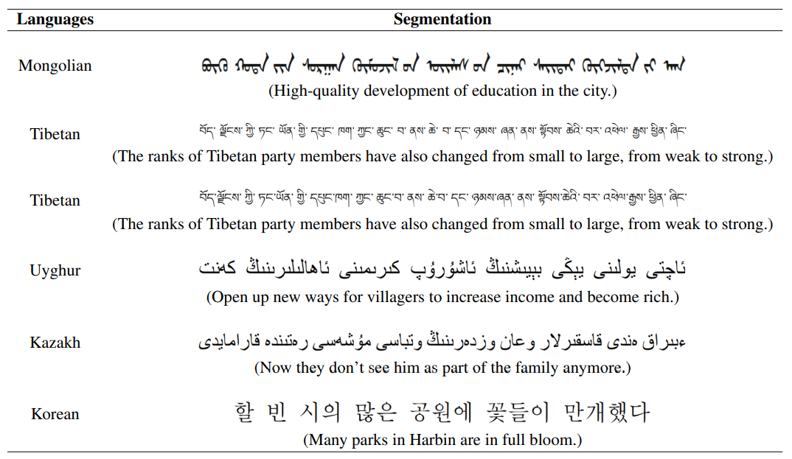
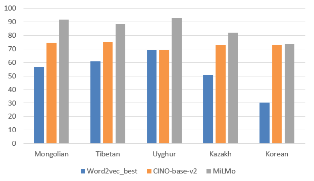

-
MiLMo
We construct a multilingual pre-trained model named MiLMo that performs better on minority language tasks, including Mongolian, Tibetan, Uyghur, Kazakh and Korean. To solve the problem of scarcity of datasets on minority languages and verify the effectiveness of the MiLMo model, we construct a minority multilingual text classification dataset named MiTC, and trains a word2vec model for each language. By comparing the word2vec model and the pre-trained model in the text classification task, we provide an optimal scheme for the downstream task research of minority languages.
Contributions
(1) We construct a pre-trained model MiLMo containing five minority languages, including Mongolian, Tibetan, Uygur, Kazakh and Korean, to provide support for various downstream tasks of minority languages.
(2) We train a word2vec representation for five languages, including Mongolian, Tibetan, Uygur, Kazakh and Korean. Comparing the word2vec representation and the pre-trained model in the downstream task of text classification, we provide the best scheme for the research of downstream task of minority languages. The experimental results show that MiLMo model outperforms the word2vec representation.
(3) To solve the problem of scarcity of minority language datasets, we construct a classification dataset MiTC containing five languages, including Mongolian, Tibetan, Uyghur, Kazakh and Korean, and publishes the word2vec representation, multilingual pre-trained model Mi XLM and multilingual classification dataset MiTC.
-
Experimental Result:
We obtain the training data of five minority languages, including Mongolian, Tibetan, Uyghur, Kazakh and Korean, The word segmentation results of the five languages are shown in Table 1.
Table 1: The results of word segmentation in each minority language.
We use MiLMo for the downstream experiment of text classification on MiTC.
The performances of MiLMo on text classificationContact us
Tel: 18811388681
Email: TibetanQA_Office@163.com